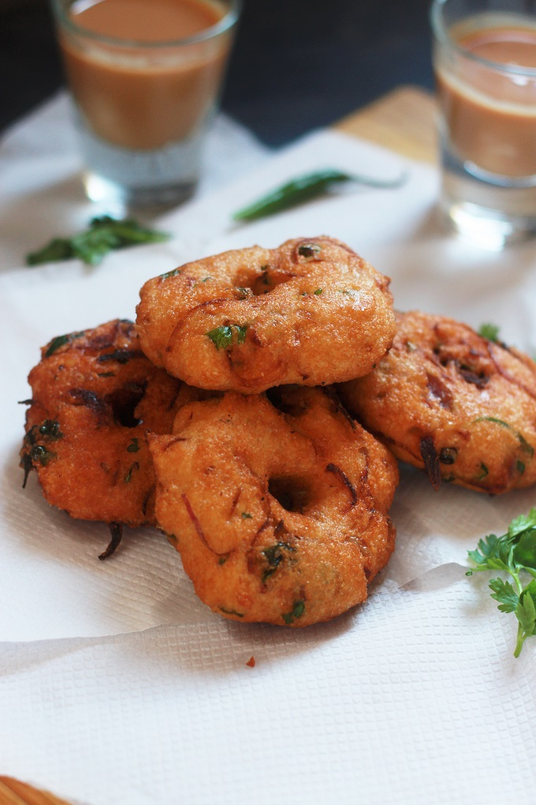

Ingredients
- 1 cup urad dal (soaked for 4-5 hours)
- 2-3 green chilies (chopped)
- 1 teaspoon cumin seeds
- 1 small onion (chopped)
- Curry leaves (optional)
- Salt to tastec
- Oil for deep frying
Process
- Grind Batter: Drain soaked urad dal and grind into a smooth batter with minimal water. Add salt, green chilies, cumin seeds, onions, and curry leaves.
- Shape Vadas: Wet your hand, take a small portion of the batter, shape into a donut, and make a hole in the center.
- Fry: Heat oil in a deep pan. Carefully slide the vadas into the hot oil and fry until golden brown on both sides.
- Serve: Drain excess oil and serve hot with chutney or sambar. Enjoy!